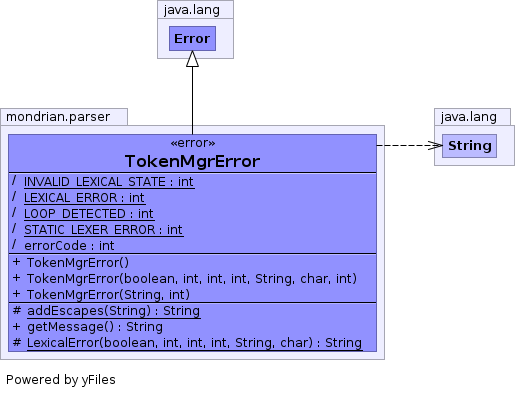

public class TokenMgrError extends Error

| Modifier and Type | Field and Description |
|---|---|
(package private) int |
errorCode
Indicates the reason why the exception is thrown.
|
(package private) static int |
INVALID_LEXICAL_STATE
Tried to change to an invalid lexical state.
|
(package private) static int |
LEXICAL_ERROR
Lexical error occurred.
|
(package private) static int |
LOOP_DETECTED
Detected (and bailed out of) an infinite loop in the token manager.
|
(package private) static int |
STATIC_LEXER_ERROR
An attempt was made to create a second instance of a static token manager.
|
| Constructor and Description |
|---|
TokenMgrError()
No arg constructor.
|
TokenMgrError(boolean EOFSeen,
int lexState,
int errorLine,
int errorColumn,
String errorAfter,
char curChar,
int reason)
Full Constructor.
|
TokenMgrError(String message,
int reason)
Constructor with message and reason.
|
| Modifier and Type | Method and Description |
|---|---|
protected static String |
addEscapes(String str)
Replaces unprintable characters by their escaped (or unicode escaped)
equivalents in the given string
|
String |
getMessage()
You can also modify the body of this method to customize your error messages.
|
protected static String |
LexicalError(boolean EOFSeen,
int lexState,
int errorLine,
int errorColumn,
String errorAfter,
char curChar)
Returns a detailed message for the Error when it is thrown by the
token manager to indicate a lexical error.
|
addSuppressed, fillInStackTrace, getCause, getLocalizedMessage, getStackTrace, getSuppressed, initCause, printStackTrace, printStackTrace, printStackTrace, setStackTrace, toStringstatic final int LEXICAL_ERROR
static final int STATIC_LEXER_ERROR
static final int INVALID_LEXICAL_STATE
static final int LOOP_DETECTED
int errorCode
public TokenMgrError()
public TokenMgrError(String message, int reason)
public TokenMgrError(boolean EOFSeen, int lexState, int errorLine, int errorColumn, String errorAfter, char curChar, int reason)
protected static final String addEscapes(String str)
protected static String LexicalError(boolean EOFSeen, int lexState, int errorLine, int errorColumn, String errorAfter, char curChar)
public String getMessage()
getMessage in class Throwable